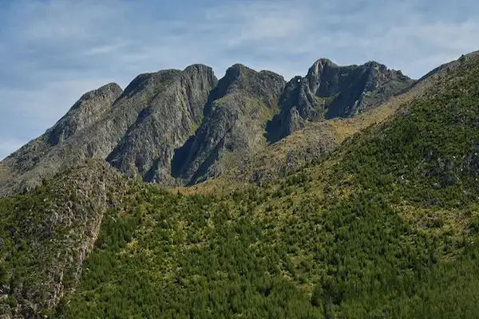
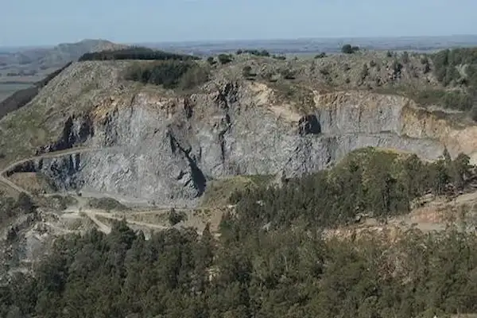
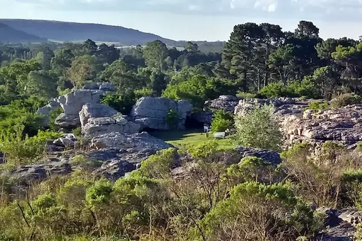

A little about us
Welcome to MPD Hiking Adventures, your gateway to unforgettable outdoor experiences. Based in the beautiful coastal city
of Mar del Plata, our mission is to connect people with nature through guided hikes, scenic explorations, and safe
adventures in the surrounding hills. Whether you're a beginner looking for your first trail or an experienced explorer
seeking new challenges, our team is here to help you discover the best of our region's natural landscapes.

Cerro de la Ventana
Cerro de la Ventana is one of the most iconic peaks in Buenos Aires Province, known for its distinctive natural “window”
carved into the rock near the summit. The trail offers panoramic views of the surrounding valleys and a unique
combination of rocky terrain and native vegetation. It's a rewarding challenge for hikers looking for a memorable and
scenic adventure.

Sierras de Tandil
The Sierras de Tandil feature gentle rolling hills, granite formations, and tranquil natural spaces ideal for hikers of
all experience levels. Visitors can explore historic landmarks, lush trails, and scenic viewpoints that highlight the
region's charm. This area offers a perfect mix of outdoor exploration and cultural appeal.

Sierras de los Padres
Sierra de los Padres is a peaceful, green oasis located just minutes from Mar del Plata, known for its beautiful hills
and quiet forested paths. Its accessible trails make it an excellent destination for beginners, families, and anyone
looking for a relaxing walk in nature. This area combines natural beauty with cozy local businesses, creating a warm and
inviting atmosphere for visitors.